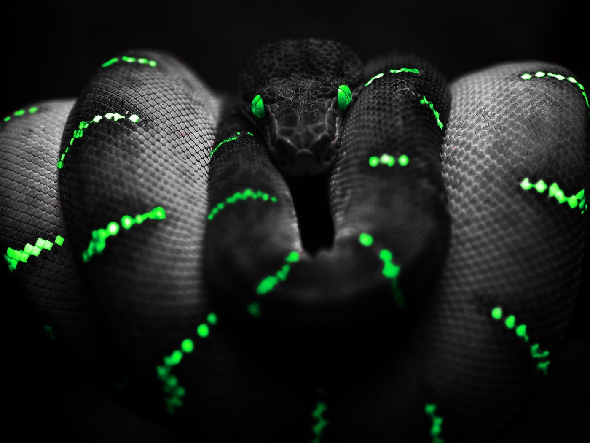

Le Terrariologue
Un project qui me tient à coeur...

Présentation
Je suis depuis tout petit passionné par les animaux, le monde qui m'entoure et plus particulièrement les reptils.
Le Terrariologue à pour but d'être une platforme référence en se qui concerne la documentaion sur les reptils.
Vous pourrez bientôt y retrouver des fiches d'élevages, des photos, et pleins d'autres choses encore.